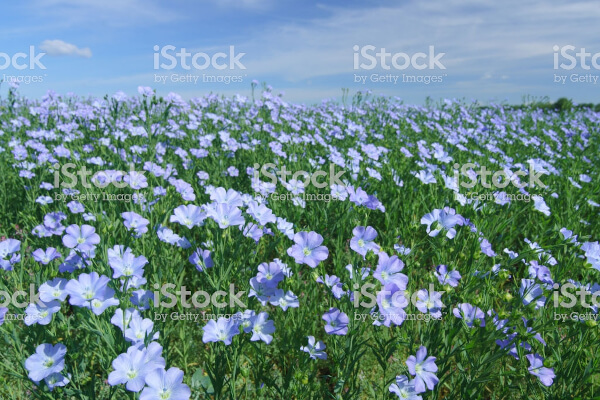
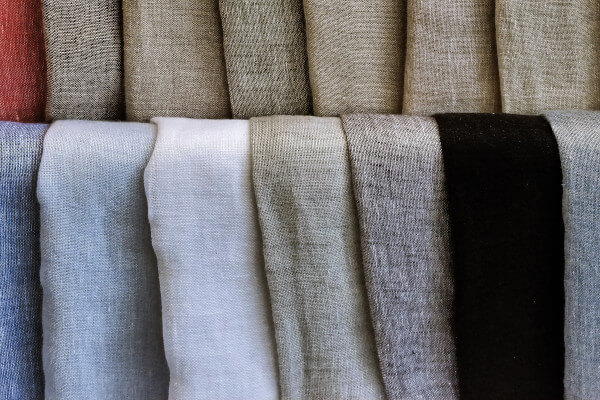

<!DOCTYPE html>
<html lang="at-de">
   <head>
      <meta charset="UTF-8">
      <meta name="viewport" content="width=device-width, initial-scale=1">
      <link rel="stylesheet" type="text/css" href="css/style.css">
      <title>Leinenstoff</title>
      <meta name="Leinenstoff" content="Wie wird Leinenstoff hergestellt? Von der Pflanze zur Kleidung.">
      <meta name=”robots” content=”noindex, nofollow”>
      
      <!--Favicon-->
      <link rel="apple-touch-icon" sizes="57x57" href="img/favicon/apple-icon-57x57.png">
      <link rel="apple-touch-icon" sizes="60x60" href="img/favicon/apple-icon-60x60.png">
      <link rel="apple-touch-icon" sizes="72x72" href="img/favicon/apple-icon-72x72.png">
      <link rel="apple-touch-icon" sizes="76x76" href="img/favicon/apple-icon-76x76.png">
      <link rel="apple-touch-icon" sizes="114x114" href="img/favicon/apple-icon-114x114.png">
      <link rel="apple-touch-icon" sizes="120x120" href="img/favicon/apple-icon-120x120.png">
      <link rel="apple-touch-icon" sizes="144x144" href="img/favicon/apple-icon-144x144.png">
      <link rel="apple-touch-icon" sizes="152x152" href="img/favicon/apple-icon-152x152.png">
      <link rel="apple-touch-icon" sizes="180x180" href="img/favicon/apple-icon-180x180.png">
      <link rel="icon" type="image/png" sizes="192x192"  href="img/favicon/android-icon-192x192.png">
      <link rel="icon" type="image/png" sizes="32x32" href="img/favicon/favicon-32x32.png">
      <link rel="icon" type="image/png" sizes="96x96" href="img/favicon/favicon-96x96.png">
      <link rel="icon" type="image/png" sizes="16x16" href="img/favicon/favicon-16x16.png">
      <link rel="manifest" href="img/favicon/manifest.json">
      <meta name="msapplication-TileColor" content="#ffffff">
      <meta name="msapplication-TileImage" content="/ms-icon-144x144.png">
      <meta name="theme-color" content="#ffffff">
      <!-- Google Fonts -->
   </head>
</html>

   <body>

      <header class="heroImage">
         <div class="heroText">
            <h1>Leinenstoff</h1>
            <p>Von der Pflanze zur Kleidung</p>
         </div>
      </header>

      <main>
         <article>
            
         </article>
         <article>
            <section>
               <h2>Die Leinenpflanze</h2>
               
               <p>
                  Gemeiner Lein (Linum usitatissimum), auch Saat-Lein oder <strong>Flachs</strong> genannt, ist eine alte Kulturpflanze, die zur Faser- (Faserlein) und zur Ölgewinnung (Öllein, Leinsamen, Leinöl) angebaut wird. Er ist eine Art aus der Gattung Lein (Linum) in der Familie der Leingewächse (Linaceae) und die einzige Lein-Art, deren Anbau eine wirtschaftliche Bedeutung hat. Es gibt mehrere Convarietäten sowie etliche Sorten. In der Praxis wird nach der Hauptverwendung Faserlein und Öllein unterschieden.
               </p>
            </section>
            <section>
               <h2>Die Leinenernte</h2>
               
               <p>
                  Bei der Ernte werden die Leinpflanzen mittels spezieller Maschinen mit den Wurzeln aus dem Boden gerauft, das heißt ausgerissen, da beim Mähen die Fasern zerstört werden. Die Ernte erfolgt bei Gelbreife, dann sind im unteren Drittel die Blätter bereits abgefallen. Das Stroh wird in Schwadlage auf dem Boden abgelegt und parallel ausgerichtet. Beim anschließenden Trocknen reißt die Epidermis auf, so dass hier später Mikroorganismen eindringen können. Durch das Riffeln werden die Samenkapseln der Leinsamen entfernt. Das Riffeln kann auch nach der Röste erfolgen. Bei der Röste oder Rotte wird durch Bakterien und Pilze die Bindung zwischen den Faserbündeln und dem sie umgebenden Gewebe gelöst. Die Rotte muss zum richtigen Zeitpunkt unterbrochen werden, um eine Schädigung der Fasern zu verhindern.
                  <br>
                  <h3>Tauröste auf dem Feld</h3>
                  Die heute vorherrschende Röstmethode ist die Tauröste, die auf rund drei Vierteln der Anbauflächen weltweit angewendet wird, vor allem in Gebieten mit ozeanischem Klima, da hierzu Taufeuchte benötigt wird. Dabei wird das Flachsstroh auf den Feldern liegengelassen. Durch die Taufeuchte bauen Bakterien und Pilze die Pektine ab. Dieses Verfahren ist relativ umweltfreundlich, auch gelangen die Nährstoffe während der Röste teilweise wieder in den Boden zurück. Nachteile sind die Witterungsanfälligkeit und die lange Dauer.
                  <br> 
                  In manchen Gebieten, z. B. in Osteuropa, Belgien, China und Ägypten, wird die Warmwasserröste eingesetzt. Hier wird das Stroh drei bis vier Tage in Bassins mit 28 bis 40 °C warmem Wasser geröstet. Dies führt durch die Abwässer zu recht hohen Umweltbelastungen.
                  <br>
                  Ein historisches Verfahren ist die Kaltwasserröste, bei der das Flachsstroh in Teichen oder in Wassergräben (sog. Flachsrösten) geröstet wurde. Chemische Verfahren zur Röste haben sich nicht durchgesetzt, da sie meist auch die Flachsfasern angreifen. Enzymatische Verfahren haben sich aus Kostengründen nicht durchgesetzt.
               </p>
            </section>
            <section>
               <h2>Flachs</h2>
               
               <p>
                  Die Flachs- oder Leinenfaser wird aus den Stängeln der Flachspflanze gewonnen und zählt zu den Bastfasern. Die Leinenfasern bilden Bündel, im Gegensatz zu Samenfasern wie Baumwolle, die aus unverbundenen Einzelfasern bestehen. Die 2,5 bis 6 Zentimeter langen Elementarfasern aus Zellulose sind durch Pektine zu den 50 bis 90 Zentimeter langen Faserbündeln, den technischen Fasern, verbunden.
               </p>
            </section>
            <section>
               <h2>Garn</h2>
               
               <p>
                  Beim Spinnen werden die Fasern zu Fäden versponnen. Lang- und Kurzfasern werden dabei unterschiedlich gehandhabt, es wird zwischen Trocken- und Nassspinnverfahren unterschieden.
                  <br>
                  Langfasern werden vor dem Verspinnen zu einem Band vereinigt, mehrfach gestreckt und mit anderen Bändern vermischt (doubliert), um so eine möglichst homogene Qualität zu erreichen. Langfasern werden meist nass zu hochwertigen Fäden versponnen. Die Bänder werden zu feinen, homogenen Fäden gestreckt. In einem Warmwasserbad bei 70 °C lösen sich die Pektine, so dass sich die Fasern leichter gegeneinander verziehen. Nach dem Aufwickeln auf Garnspulen wird das Garn bei rund 80 °C getrocknet.
                  <br>
                  Bei Kurzfasern wird durch Aufrauen (Kardieren) ein flächiges „Vlies“ produziert, das zu einem Band reduziert wird. Dieses Band wird gekämmt (gehechelt), um es von Schäben und zu kurzen Fasern zu reinigen. Dann wird das Band gestreckt und wie die Langfasern doubliert. Kurzfasern werden in der Regel trocken versponnen. Die entstehenden Garne sind rau und fühlen sich gleichzeitig weich an.
               </p>
            </section>
            <section>
               <h2>Weben des Stoffes</h2>
               
               <p>
                  Gewebt wird Leinen in der klassischen Leinwandbindung, aber auch Jacquard, Köper und andere Bindungsarten sind üblich. Batist, Schleier und Linon wurden ebenfalls aus Flachs hergestellt, man zählte sie jedoch nicht zum Leinengewebe. Beim Weben von Leinen muss für die Kettfäden ein sehr gleichmäßiges und damit teures Garn verwendet werden. Kettfäden mit den für Leinen typischen Unregelmäßigkeiten würden unter der Scheuerbelastung leiden und zu oft reißen.
               </p>
               <iframe width="600" height="400" src="https://www.youtube.com/embed/n_Z13nC-uSU" frameborder="0" allow="accelerometer; autoplay; encrypted-media; gyroscope; picture-in-picture" allowfullscreen></iframe>
            </section>
            <section>
               <h2>Der Leinenstoff</h2>
               
               <p>
                  Leinengewebe wurden traditionell für Bett- und Hauswäsche verwendet. In dieser Nutzung wurden sie von der billigeren Baumwolle verdrängt. Neue Einsatzgebiete wie Kleidung und Dekorationsstoffe kommen hinzu, besonders in Form handgewebter hochpreisiger Produkte. Leinen wird als Bezugsstoff für Bucheinbände verwendet, außerdem für Schuhe, Taschen und hochwertige Akupressurmatten. Namengebend waren Leinenstoffe zum Bespannen für Leinwände in der Malerei. Leinenstroh findet zusehends eine große Bedeutung als Einstreu in der Pferdehaltung. Dazu verwendet man den holzigen Teil des Flachsstängels. Die Saugkraft ist zehnmal so hoch wie von gewöhnlichem Stroh, viermal so hoch wie bei Holzspänen.
               </p>
            </section>
            <section>
               <h2>Kleidung aus Leinen</h2>
               
               <p>
                  Leinengewebe wurden traditionell für Bett- und Hauswäsche verwendet. In dieser Nutzung wurden sie von der billigeren Baumwolle verdrängt. Neue Einsatzgebiete wie Kleidung und Dekorationsstoffe kommen hinzu, besonders in Form handgewebter hochpreisiger Produkte. Leinen wird als Bezugsstoff für Bucheinbände verwendet, außerdem für Schuhe, Taschen und hochwertige Akupressurmatten[10]. Namengebend waren Leinenstoffe zum Bespannen für Leinwände in der Malerei. Leinenstroh findet zusehends eine große Bedeutung als Einstreu in der Pferdehaltung. Dazu verwendet man den holzigen Teil des Flachsstängels. Die Saugkraft ist zehnmal so hoch wie von gewöhnlichem Stroh, viermal so hoch wie bei Holzspänen.
               </p>
            </section>
         </article>

         <article>
            <section></section>
            <section></section>
         </article>

         <article>
            <section></section>
            <section></section>
         </article>

         
      </main>

      <footer></footer>

   </body>

</html>
